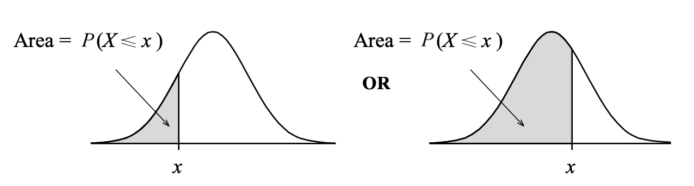
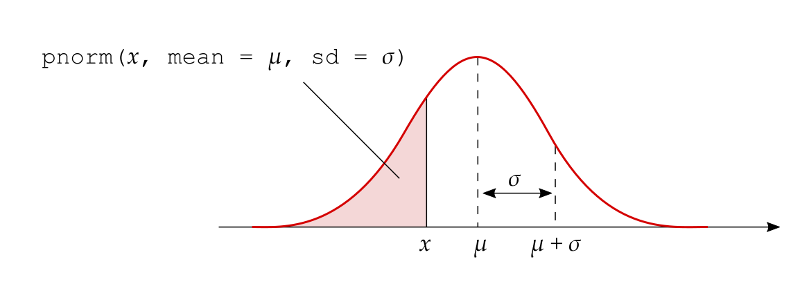
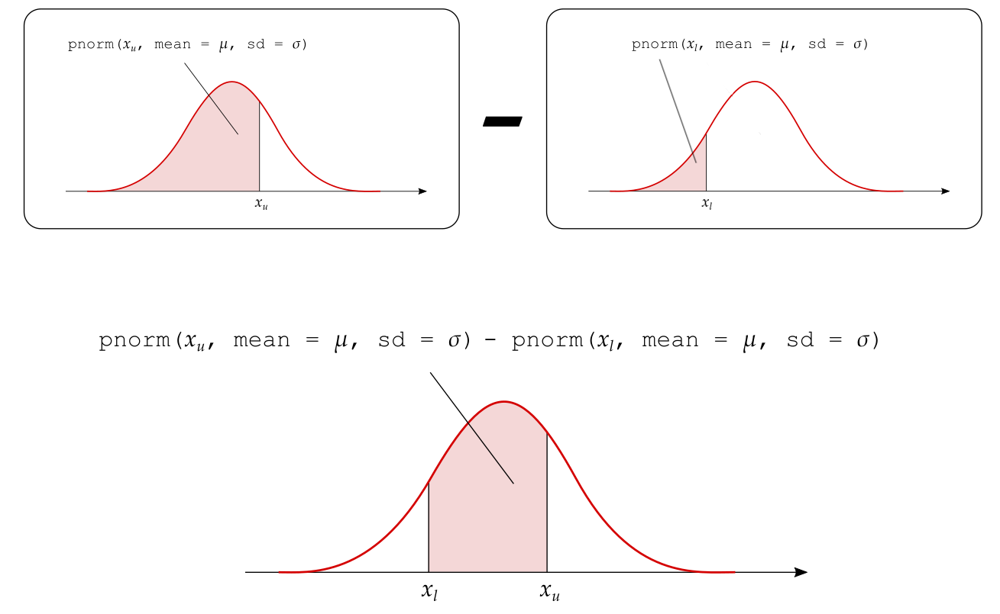
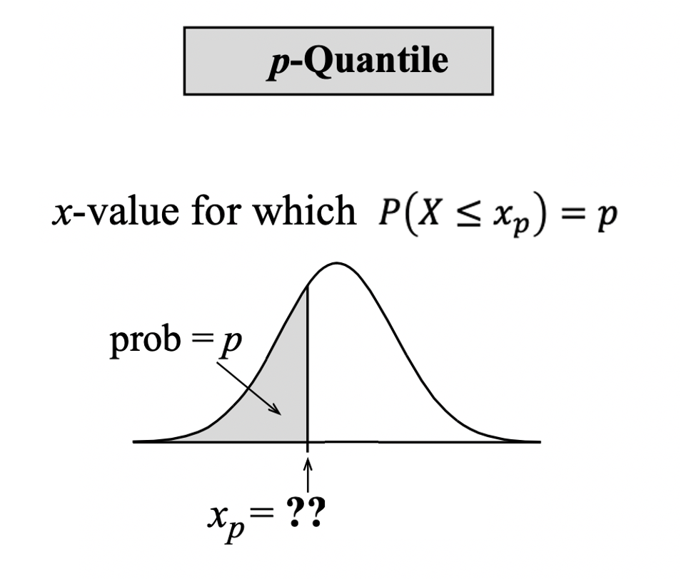

The normal distribution
A continuous random variable is said to be normally distributed, or to have a normal probability distribution, if its distribution has the shape of a normal curve (it is symmetric and bell-shaped).
The normal density function is the function used to calculate probabilities (as areas under the density curve) for a normally distributed random variable.
A normal distribution can be centred at any value and have basically any spread. Hence, we need to specify:
- where the normal curve should be centred at;
- what should the spread of the normal curve be.
From this we can see that the normal curve depends on two quantities called the parameters of the normal distribution (see Figure 1):
- the mean \(\mu\), specifying the centre of the distribution;
- the standard deviation \(\sigma\), specifying the spread of the distribution.
As we can see, changing \(\mu\) shifts the curve along the axis, while increasing \(\sigma\) increases the spread and flattens the curve.
The formula for the normal density curve which we plotted above is provided below. However, you do not have to memorise it as this is already implemented in R: \[ f(x) = \frac{1}{\sigma \sqrt{2 \pi}} e^{-\frac{(x - \mu)^2}{2 \sigma^2}} \] for some values of \(\mu\) and \(\sigma\).
The same function in R is:
dnorm(x, mean = <mean>, sd = <sd>)where:
xrepresents the value of the random variablemeanthe mean of the normal curvesdthe standard deviation of the curve
We write that a random variable \(X\) follows a normal distribution with mean \(\mu\) and standard deviation \(\sigma\) as \[ X \sim N(\mu, \sigma) \]
Clearly, the mean and standard deviation of \(X\) will be \(E(X) = \mu\) and \(SD(X) = \sigma\) respectively.
We use lowercase letters such as \(x, a, b\) to denote an observed value, or a particular value, of the random variable \(X\).
The 68-95-99.7% rule
A variable which is normally distributed has:
68% of the observations (values) within \(1\sigma\) of the \(\mu\)
95% of its observations (values) within \(2\sigma\) of the \(\mu\)
99.7% of its observations (values) within \(3\sigma\) of the \(\mu\)

Obtaining probabilities
Before describing how to compute the probabilities for a continuous random variable using R, we need to discuss an important property that only holds for continuous random variables:
Note
Interval endpoints for continuous random variables
When performing calculations involving a continuous random variable, we do not have to worry about whether interval endpoints are included or not in the calculation: \[ P(a \leq X \leq b) = P(a \leq X < b) = P(a < X \leq b) = P(a < X < b) \]
This is due to the fact that the probability of \(X\) being equal to a specific value is 0: \[ \begin{aligned} P(X \leq x) &= P(X < x) + P(X = x) \\ &= P(X < x) + 0 \\ &= P(X < x) \end{aligned} \]
We compute areas under the normal curve using the function pnorm(x, mean, sd). This returns the area to the left of x in a normal curve centred at mean and having standard deviation sd: \[
P(X \leq x) = P(X < x) = \texttt{pnorm}(x, \texttt{ mean = } \mu, \texttt{ sd = } \sigma)
\]
The following figure shows the type of areas returned by the pnorm function:

For example, the probability that the random variable \(X \sim N(\mu = 5, \sigma = 2)\) is less than 1 is:
pnorm(1, mean = 5, sd = 2)[1] 0.0228There are three types of probabilities that we might want to compute:
The probability that \(X\) is less than a given value: \(P(X < x)\)
The probability that \(X\) is between a lower and an upper value: \(P(x_l < X < x_u)\)
The probability that \(X\) is greater than a given value: \(P(X > x)\)
We will now analyse each case in turn and show how each of these is computed.
1. Area to the left of a value \(x\)
The probability that \(X < x\) is directly returned by pnorm():

2. Area between the values \(x_l\) and \(x_u\)
The probability that \(X\) is between a lower (\(x_l\)) and an upper (\(x_u\)) value can be obtained as: \[ P(x_l < X < x_u) = P(X < x_u) - P(X < x_l) \]

3. Area to the right of \(x\)
The probability to the right of \(x\) is one minus the probability to the left of \(x\): \[ P(X > x) = 1 - P(X < x) \]

The inverse problem: quantiles and percentiles
In this section we will examine the inverse problem to the one of calculating the probability that \(X < x\).
Given a probability \(p\), what’s the value \(x\) that cuts to its left a probability of \(p\)?

That value, called the \(p\)-quantile, is the value \(x_p\) for which the lower-tail probability is \(p\):
\[ \text{value }x_p\text{ such that} \qquad P(X \leq x_p) = p \]
Percentiles and quantiles are two words used to express the same idea. We use percentile when speaking in terms of percentages and quantile when speaking in terms of proportions (or probabilities) between 0 and 1.
The 50th percentile (or \(0.5\)-quantile) is the value \(x_{0.5}\) that cuts a 0.5 probability to its left. You actually know that the value such that 50% of the observations are lower and 50% are higher is called the median.
In R, you calculate the \(p\)-quantile with the function
qnorm(p, mean, sd)This will return the value \(x\) such that \(P(X \leq x) = p\). That value is typically written \(x_p\).
For example, if \(X \sim N(0, 1)\), the value cutting an area of 0.025 to its left is
qnorm(0.025, 0, 1)[1] -1.96while that cutting an area of 0.975 to its left is
qnorm(0.975, 0, 1)[1] 1.96The \(0.025\)-quantile is \(x_{0.025} = -1.96\), and the \(0.975\)-quantile is \(x_{0.975} = 1.96\).
Glossary
- Continuous random variable. A variable that takes on numerical values determined by a chance process which can have any number of decimals.
- Density function. The function which provides the probability that a random variable is within an interval in terms of the area under that curve between that interval.
- Normal distribution. The probability distribution of a random variable which has a symmetric and bell shaped density curve.
- \(p\)-quantile. The \(x_p\) value cutting an area = \(p\) to its left. In other words, the \(x_p\) value such that \(P(X \leq x_p) = p\).